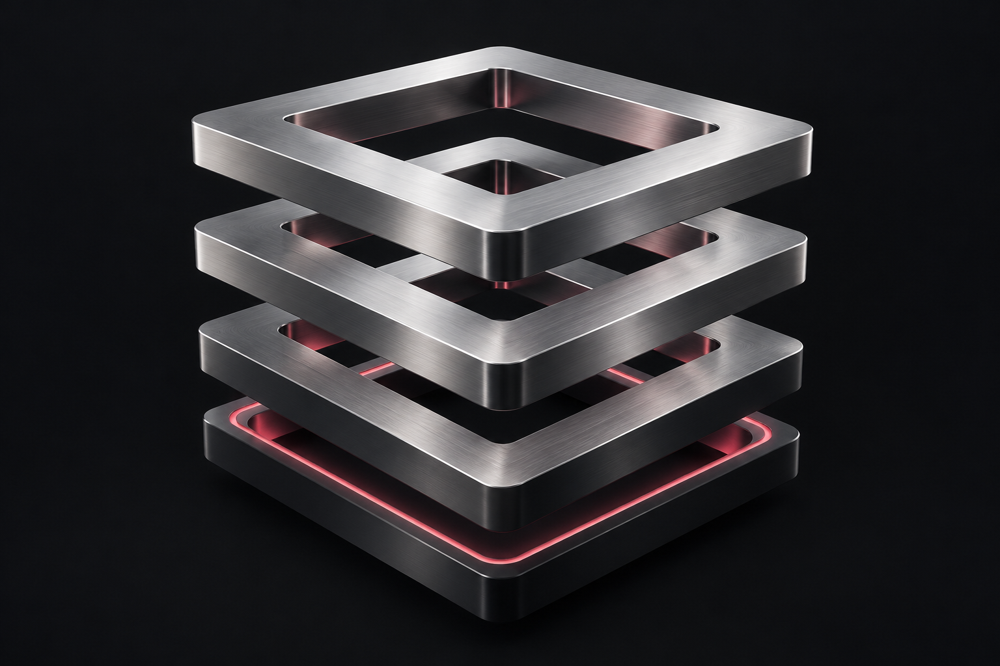

Lighthouse · Infrastructure & developer tools
BackupData
I planned and built a backup service for databases and S3 data.
Explore the studyDatabase
S3 data
BackupData
Go SDKNode.js SDKCLI
My work connects interface design, full-stack systems, Web3, and applied AI.
View my work
From interface to infrastructure.
One connected practiceProducts and internal tools.
Backend, SDKs, and infrastructure.
Wallets and connected services.
AI tools for business tasks.
Products, systems, and developer tools from my work at Lighthouse.
Lighthouse · Infrastructure & developer tools
I planned and built a backup service for databases and S3 data.
Explore the studyI owned the frontend across Lighthouse products and internal tools.
I integrated wallets and smart contracts.
I built 1MB and its Chrome extension independently.
The product connects data collection, tokenization, and rewards for online activity.
At Lighthouse, I worked on memory and context sharing between AI agents as an extension of BackupData.
Explore AI SystemsMy work connects product design, frontend systems, infrastructure, Web3, and applied AI.
Full Stack Developer / Team Lead
Lead Frontend Developer
Full-Stack Developer / Web3 Integration Specialist
My current work includes automation, RAG agents, LoRA models, voice systems, and MCP services.